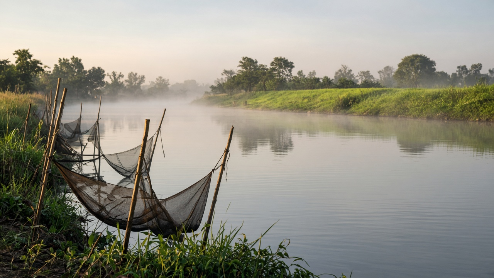
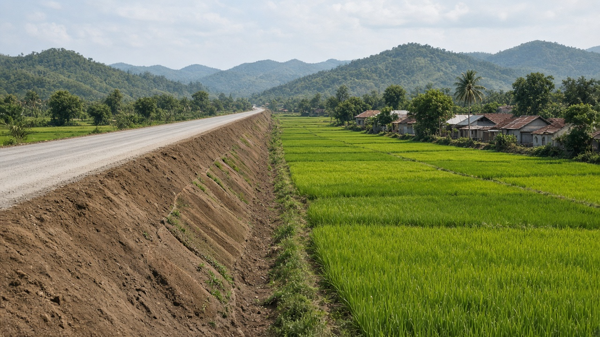
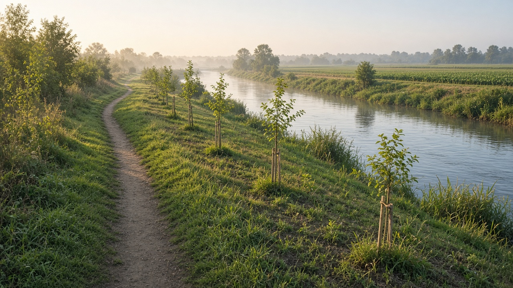

Environmental Justice and Rights of Nature
Published on August 20, 2026

Environmental justice holds that no group should bear a disproportionate share of pollution or ecological loss because of income, caste, ethnicity, gender, or location. It includes distributive justice (who gets the harm), procedural justice (who is heard), and recognition (whose knowledge and sacred sites count). Siting of landfills, industrial corridors, and highways often fails these tests when hearings are distant and compensation is cash for land that was a livelihood. Mapping exposure by social group is the empirical starting point for any honest policy debate.
Rights of nature are legal innovations that treat a river, forest, or ecosystem as a subject with standing, rather than only as property. Courts or statutes may appoint guardians and allow suits to defend the entity's integrity. The approach can complement human-rights claims to a clean environment, which many constitutions already recognize. Critics warn that rights without enforcement budgets become symbolic; supporters reply that property-only law systematically undervalues living systems and the people who depend on them.
South Asian practice includes constitutional environmental rights, public-interest litigation, and occasional judicial recognition of river personhood. Implementation still depends on inspectors, data, and political will. Readers should ask who speaks for the river and whether downstream farmers and fishers are among the guardians. Justice and rights language changes standing in court; economics still has to fund restoration and stop the next illegal extraction. A just outcome is one in which the community that lived with the river also lives with the remedy, not only with the press release.

वातावरणीय न्याय भन्छ कुनै समूहले आय, जात, जातीयता, लिङ्ग वा स्थानकै कारण प्रदूषण वा पारिस्थितिक हानिको असमानुपातिक हिस्सा बोक्नु हुँदैन। यसमा वितरण न्याय (हानि कसलाई), प्रक्रिया न्याय (कसको सुनुवाइ) र मान्यता (कसको ज्ञान र पवित्र स्थल गनिन्छ) पर्छन्। फोहोर स्थल, औद्योगिक गलियारा र राजमार्ग राख्दा सुनुवाइ टाढा हुन्छ र क्षतिपूर्ति जीविकोपार्जन रहेको भूमिको नगद मात्र हुन्छ भने यी परीक्षा असफल हुन्छन्। सामाजिक समूहअनुसार संपर्क नक्सा गर्नु इमानदार नीति बहसको अनुभवजन्य सुरुवात हो।
प्रकृति अधिकार कानुनी नवप्रवर्तन हुन् जसले नदी, वन वा पारिस्थितिक प्रणालीलाई सम्पत्ति मात्र होइन हैसियत भएको विषय मान्छन्। अदालत वा ऐनले संरक्षक नियुक्त गर्न र अखण्डता रक्षा गर्न मुद्दा अनुमति दिन सक्छन्। यो दृष्टिकोण स्वच्छ वातावरणको मानव अधिकार दाबीसँग पूरक हुन सक्छ, जुन धेरै संविधानले पहिले नै चिन्छन्। आलोचक चेताउँछन् कार्यान्वयन बजेट बिना अधिकार प्रतीकात्मक हुन्छन्; समर्थक भन्छन् सम्पत्ति-मात्र कानुनले जीवित प्रणाली र तिनमा निर्भर मानिसको मूल्य व्यवस्थित रूपमा कम आँक्छ।
दक्षिण एसियाली अभ्यासमा संवैधानिक वातावरण अधिकार, सार्वजनिक हित मुद्दा र कहिलेकाहीं नदी व्यक्तित्वको न्यायिक मान्यता पर्छन्। कार्यान्वयन अझै निरीक्षक, तथ्याङ्क र राजनीतिक इच्छामा भर पर्छ। पाठकले नदीका लागि को बोल्छ र तल्लो किसान तथा माछापालक संरक्षकमा छन् कि सोध्नुपर्छ। न्याय र अधिकारको भाषाले अदालतमा हैसियत बदल्छ; अर्थशास्त्रले अझै पुनर्स्थापना कोष गर्नुपर्छ र अर्को अवैध दोहन रोक्नुपर्छ। न्यायोचित नतिजा त्यो हो जसमा नदीसँग बाँचेको समुदाय उपचारसँग पनि बाँच्छ, प्रेस विज्ञप्तिसँग मात्र होइन।

पर्यावरण न्याय कहता है कोई समूह आय, जाति, नृजातीयता, लिंग या स्थान के कारण प्रदूषण या पारिस्थितिक हानि का असमानुपातिक हिस्सा न उठाए। इसमें वितरण न्याय (हानि किसे), प्रक्रिया न्याय (किसकी सुनवाई) और मान्यता (किसका ज्ञान और पवित्र स्थल गिने जाएँ) आते हैं। कचरा स्थल, औद्योगिक गलियारा और राजमार्ग रखने पर सुनवाई दूर हो और मुआवजा आजीविका रही भूमि का केवल नकद हो तो ये परीक्षाएँ असफल होती हैं। सामाजिक समूह के अनुसार संपर्क नक्शा करना ईमानदार नीति बहस का अनुभवजन्य आरंभ है।
प्रकृति अधिकार कानूनी नवाचार हैं जो नदी, वन या पारिस्थितिक तंत्र को केवल संपत्ति नहीं हैसियत वाला विषय मानते हैं। न्यायालय या अधिनियम संरक्षक नियुक्त कर सकते हैं और अखंडता रक्षा के लिए मुकदमा अनुमति दे सकते हैं। यह दृष्टिकोण स्वच्छ पर्यावरण के मानव अधिकार दावों का पूरक हो सकता है, जिन्हें कई संविधान पहले से पहचानते हैं। आलोचक चेताते हैं प्रवर्तन बजट बिना अधिकार प्रतीकात्मक रह जाते हैं; समर्थक कहते हैं केवल-संपत्ति कानून जीवित तंत्रों और उन पर निर्भर लोगों का मूल्य व्यवस्थित रूप से कम आँकता है।
दक्षिण एशियाई अभ्यास में संवैधानिक पर्यावरण अधिकार, लोकहित याचिका और कभी नदी व्यक्तित्व की न्यायिक मान्यता आती है। कार्यान्वयन अभी निरीक्षक, आँकड़े और राजनीतिक इच्छा पर निर्भर है। पाठक पूछें नदी के लिए कौन बोलता है और नीचे के किसान तथा मत्स्य पालक संरक्षकों में हैं या नहीं। न्याय और अधिकार की भाषा न्यायालय में हैसियत बदलती है; अर्थशास्त्र को अभी पुनर्स्थापना का वित्त और अगला अवैध दोहन रोकना है। न्यायोचित परिणाम वह है जिसमें नदी के साथ जिया समुदाय उपचार के साथ भी जीए, केवल प्रेस विज्ञप्ति के साथ नहीं।